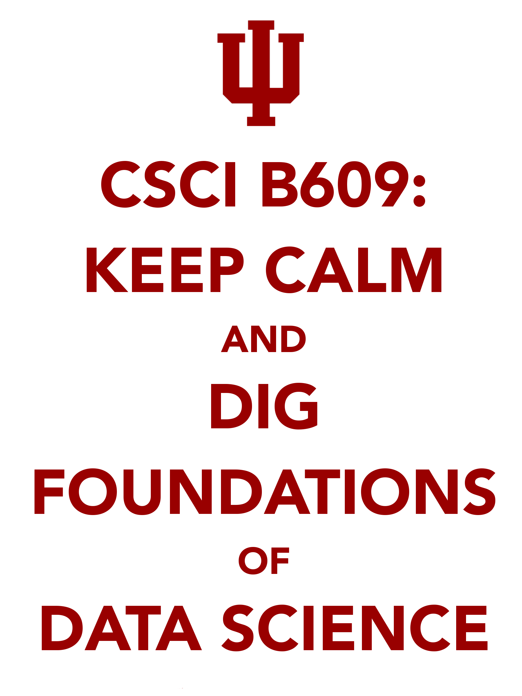

|

|
- What? This class will give you a mathematical toolkit that can be applied to problems in data anslysis. Target audience are students interested in algorithms, statistics, machine learning, data mining and related areas.
- Who? Grigory Yaroslavtsev.
- When? Fall 2016, MW 16:00 – 17:15.
- Where? Ballantine Hall, 310.
- Need permission? Please, send me an e-mail with relevant coursework you have taken. In most cases permission will be granted.
- Grading? The class will be graded based on home assignments and a final project.
- TA? Md. Lisul Islam, IU id: islammdl.
- Office hours? Held by the Md. Lisul Islam on Tuesdays, 12:30–2pm at Lindley Hall, 125.
- Prerequisites? There are no formal prerequisites, but you should be familiar with the basics of algorithm design and analysis, discrete mathematics, probability and have a strong mathematical background.
- Textbook?
This class is primarily based on the emponimous textbook by Blum, Hopcroft and Kannan which is available here.
- More questions?
In addition to Canvas we are using Piazza for questons. Sign up: here. Please, don't use my personal e-mail for questions.
|